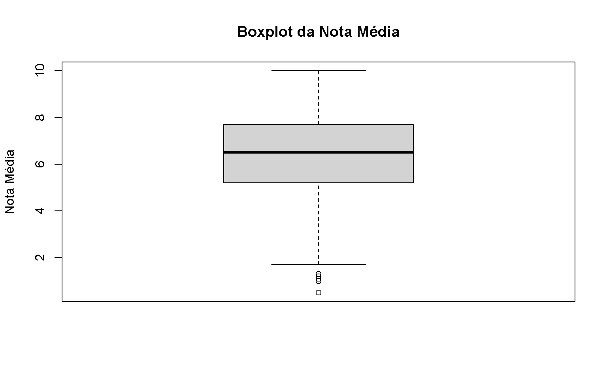
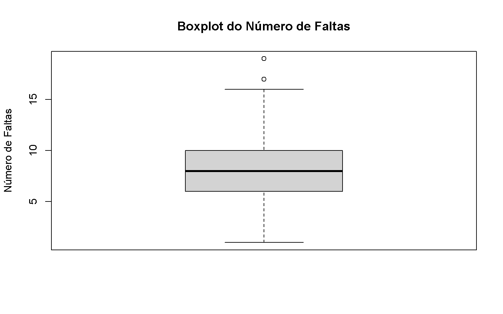
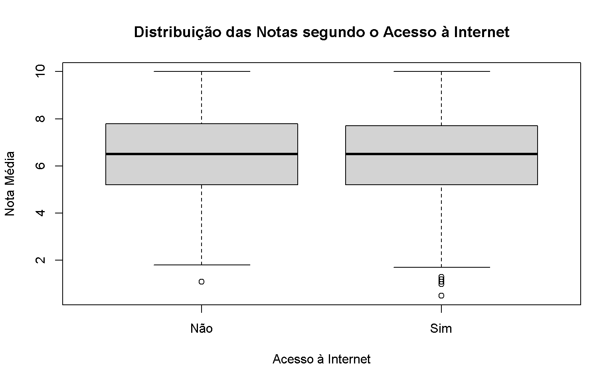
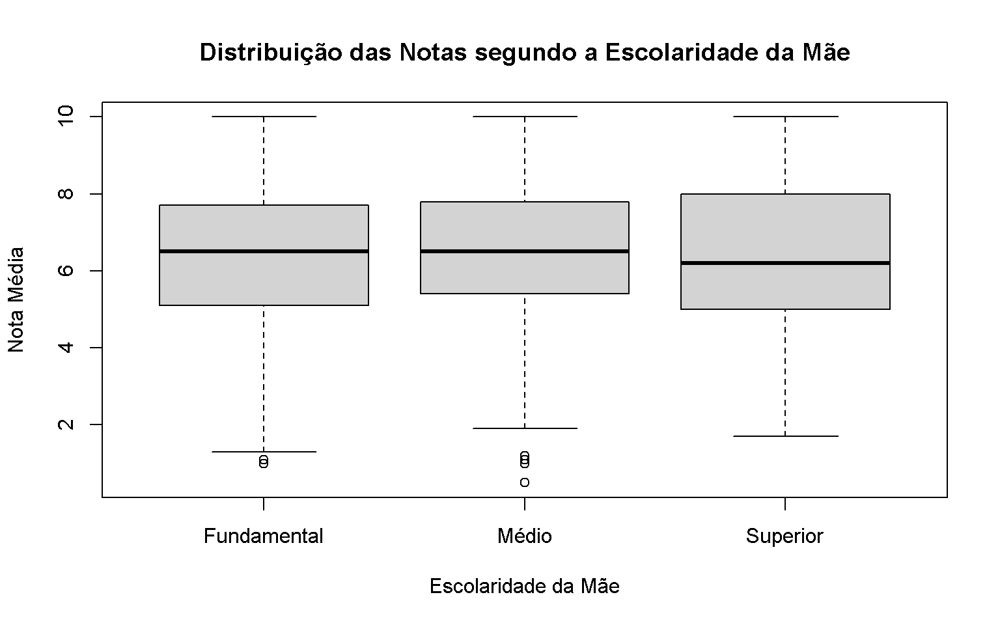
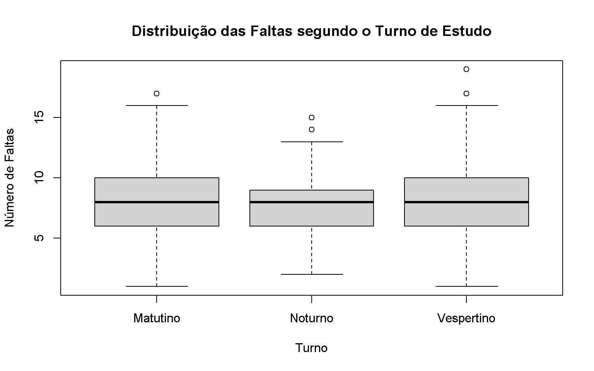
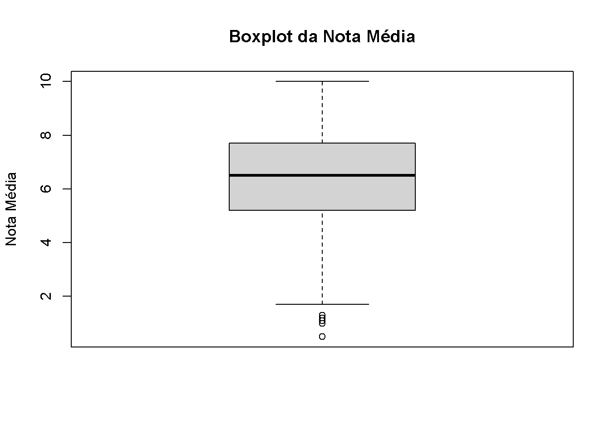
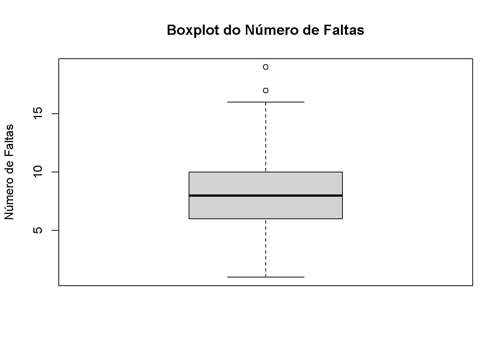
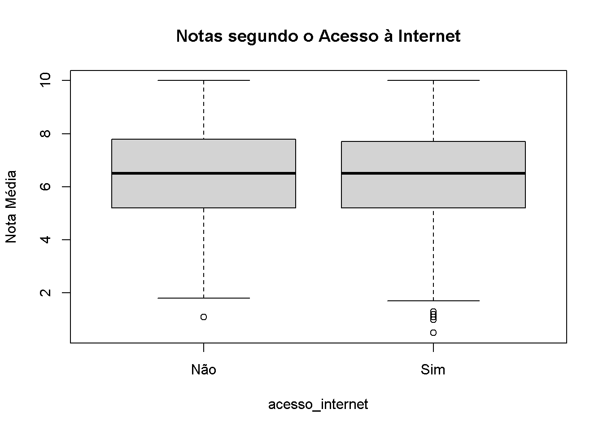
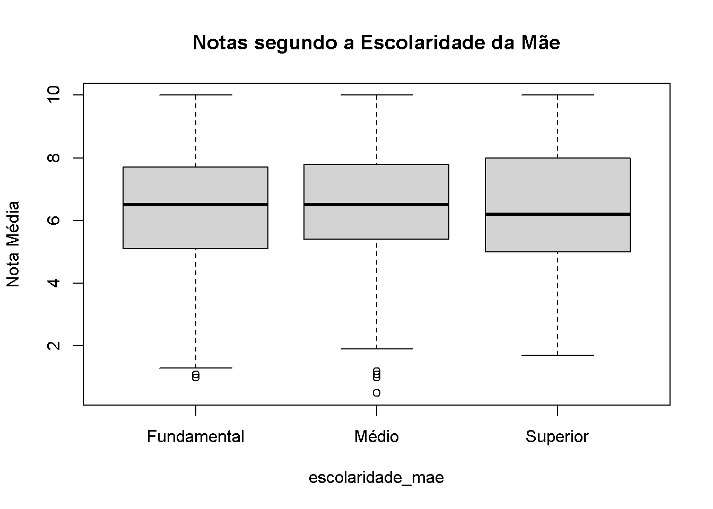
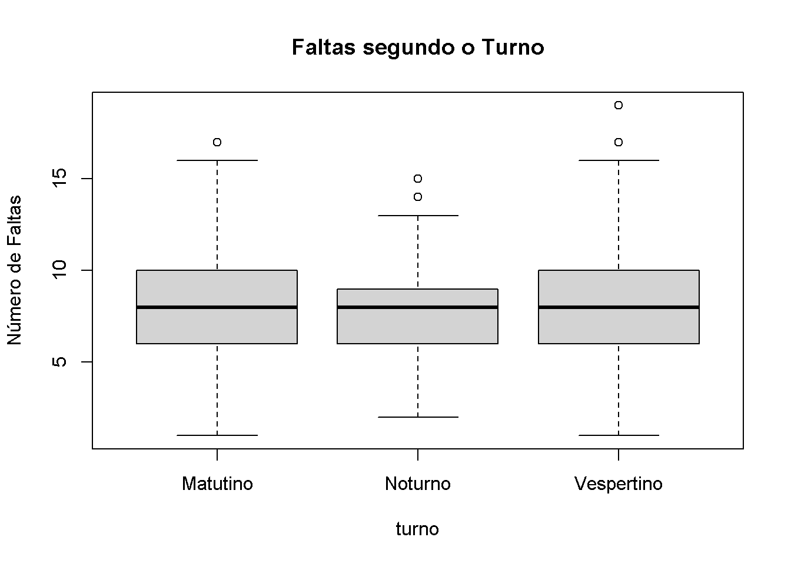

dados_alunos <- read.table(
file = "dados_alunos.csv",
header = TRUE,
sep = ";",
dec = ",",
stringsAsFactors = FALSE
)
dados_alunos$nota_media <- as.numeric(
gsub(",", ".", as.character(dados_alunos$nota_media))
)Relatório 3: Aprofundando a análise estatística do banco de dados utilizado no Relatório 2, explorando as principais medidas de posição e de dispersão aplicadas às variáveis quantitativas do estudo.
1 Introdução
1.1 Contextualização do estudo no cenário educacional
1.2 Objetivos do relatório
1.3 Questões norteadoras
- Valor representativo do centro dos dados.
- Homogeneidade versus heterogeneidade do comportamento dos alunos.
- Adequação da média na presença de assimetria e valores extremos.
- Comparação de grupos com médias semelhantes e comportamentos distintos.
2 Descrição do banco de dados
2.1 Origem e dimensão dos dados
Banco de dados constituído por 1.000 alunos de escola pública brasileira.
2.2 Variáveis quantitativas principais
- Faltas.
- Nota Média.
2.3 Variáveis qualitativas para formação de subgrupos
- Turno de estudo.
- Escolaridade da mãe.
- Acesso à internet em casa.
3 Metodologia
3.1 Procedimento de importação do arquivo dados_alunos.csv no R
3.2 Medidas de posição
- Média.
- Mediana.
- Moda.
- Quartis.
- Percentis.
3.3 Medidas de dispersão
- Amplitude.
- Amplitude Interquartil (AIQ).
- Variância.
- Desvio-Padrão.
- Coeficiente de Variação (CV).
3.4 Ferramentas e pacotes computacionais empregados
4 Medidas de posição
4.1 Média Aritmética
4.2 Mediana
4.3 Moda
4.4 Quartis
4.5 Percentis
5 Medidas de dispersão
5.1 Amplitude Total
5.2 Amplitude Interquartil
5.3 Variância Amostral
5.4 Desvio-Padrão Amostral
5.5 Coeficiente de Variação
6 Análise por subgrupos
6.1 Notas segundo o Acesso à Internet
6.1.1 Comparação entre alunos com e sem acesso à internet
6.2 Notas segundo a Escolaridade da Mãe
6.2.1 Comparação entre Fundamental, Médio e Superior
6.3 Faltas segundo o Turno de Estudo
6.3.1 Comparação entre Matutino, Vespertino e Noturno
7 Representações gráficas
7.1 Boxplots Globais
7.1.1 Boxplot da Nota Média
7.1.2 Boxplot das Faltas
7.2 Gráficos Comparativos por Subgrupos
7.2.1 Distribuição das Notas por Acesso à Internet
7.2.2 Distribuição das Notas por Escolaridade da Mãe
7.2.3 Distribuição das Faltas por Turno de Estudo
7.3 Integração e interpretação estatística dos gráficos
8 Discussão dos resultados
8.1 Média versus Mediana
8.2 O efeito da variabilidade
8.3 Seleção das medidas estatísticas mais adequadas
8.3.1 Desempenho médio global
8.3.2 Desempenho típico com valores extremos
8.3.3 Dispersão das notas
8.3.4 Comparação da variabilidade
8.3.5 Posição relativa de um aluno no grupo
8.4 Tabela-síntese comparativa
8.4.1 Mínimo
8.4.2 Q1
8.4.3 Média
8.4.4 Mediana
8.4.5 Q3
8.4.6 Máximo
8.4.7 Amplitude
8.4.8 AIQ
8.4.9 Variância
8.4.10 Desvio-Padrão
8.4.11 Coeficiente de Variação
9 Conclusões
9.1 Síntese dos achados sobre as variáveis Faltas e Nota Média
9.2 Identificação da variável de maior variabilidade relativa
9.3 Resumo das diferenças observadas entre os subgrupos analisados
10 Limitações da análise
10.1 Cuidados e precauções na interpretação das diferenças entre grupos
10.2 Distinção entre descrição estatística, associação e causalidade
10.3 Impossibilidade de inferir relações de causa e efeito sem controle de variáveis
11 Código R utilizado
11.1 Importação e preparação dos dados
11.2 Cálculo das medidas estatísticas
11.3 Análise dos subgrupos
11.4 Construção dos gráficos
11.5 # Referências bibliográficas
title: “Relatório 3: Aprofundando a análise estatística do banco de dados utilizado no Relatório 2, explorando as principais medidas de posição e de dispersão aplicadas às variáveis quantitativas do estudo” author: “Reinaldo Gomes” date: “15/09/2026” format: html: toc: true toc-depth: 3 number-sections: true lang: pt-BR execute: echo: false warning: false message: false ————–
12 1 Introdução
12.1 1.1 Contextualização do estudo no cenário educacional
A análise estatística de dados educacionais permite compreender diferentes aspectos relacionados ao desempenho e à frequência dos alunos. Entretanto, a simples apresentação de uma média não é suficiente para representar completamente um conjunto de dados.
Dois grupos podem apresentar médias semelhantes e, ainda assim, possuir comportamentos bastante diferentes. Um grupo pode apresentar resultados concentrados próximos da média, enquanto outro pode apresentar grande dispersão, com alunos situados em posições muito distintas.
Neste relatório, são analisadas duas variáveis quantitativas do banco de dados: o número de faltas e a nota média dos alunos. Além da análise global, são realizadas comparações entre grupos definidos pelo acesso à internet, pela escolaridade da mãe e pelo turno de estudo.
A análise busca relacionar os resultados numéricos ao contexto educacional, utilizando medidas de posição, medidas de dispersão e representações gráficas.
12.2 1.2 Objetivos do relatório
O objetivo deste relatório é aprofundar a análise estatística do banco de dados utilizado anteriormente, explorando medidas de posição e de dispersão aplicadas às variáveis quantitativas.
Especificamente, pretende-se:
- calcular e interpretar média, mediana e moda;
- determinar quartis e percentis;
- calcular amplitude, amplitude interquartil, variância, desvio-padrão e coeficiente de variação;
- comparar o comportamento das notas e das faltas;
- analisar diferenças entre subgrupos de alunos;
- utilizar gráficos para complementar a análise numérica;
- discutir as diferenças entre média e mediana;
- identificar limitações das conclusões baseadas apenas em estatísticas descritivas.
12.3 1.3 Questões norteadoras
A análise foi desenvolvida buscando responder às seguintes questões:
- Qual valor representa melhor o centro dos dados?
- Os alunos apresentam comportamento homogêneo ou heterogêneo?
- A média é adequada quando existem assimetrias ou valores extremos?
- Dois grupos podem apresentar médias semelhantes e comportamentos diferentes?
Essas questões orientam a interpretação dos resultados apresentados ao longo do relatório.
13 2 Descrição do banco de dados
13.1 2.1 Origem e dimensão dos dados
O banco de dados é constituído por informações referentes a 1000 alunos de uma escola pública brasileira.
Cada linha representa um aluno, enquanto as colunas apresentam informações quantitativas e qualitativas utilizadas na análise estatística.
O banco contém 5 variáveis, permitindo tanto uma análise global quanto a comparação entre diferentes subgrupos.
13.2 2.2 Variáveis quantitativas principais
As duas principais variáveis quantitativas analisadas são:
- Faltas: representa o número de faltas registradas por aluno.
- Nota Média: representa o desempenho médio do aluno em uma escala de 0 a 10.
A variável faltas apresentou valores entre 1 e 19.
A variável nota média apresentou valores entre 0.5 e 10.
13.3 2.3 Variáveis qualitativas para formação de subgrupos
As variáveis qualitativas utilizadas para a formação dos grupos são:
- Turno de estudo: Matutino, Vespertino e Noturno;
- Escolaridade da mãe: Fundamental, Médio e Superior;
- Acesso à internet em casa: Sim ou Não.
Essas variáveis permitem comparar medidas de posição e dispersão entre diferentes grupos de alunos.
14 3 Metodologia
14.1 3.1 Procedimento de importação do arquivo dados_alunos.csv no R
O banco de dados foi importado para o R utilizando a função read.table(), considerando o ponto e vírgula como separador entre os campos.
Após a importação, foi realizada uma preparação da variável nota_media, garantindo sua conversão para formato numérico.
O procedimento utilizado foi:
14.2 3.2 Medidas de posição
Foram utilizadas as seguintes medidas de posição:
- média;
- mediana;
- moda;
- quartis;
- percentis.
Essas medidas permitem identificar valores centrais e posições relativas dentro da distribuição.
14.3 3.3 Medidas de dispersão
Também foram calculadas as seguintes medidas:
- amplitude;
- amplitude interquartil;
- variância;
- desvio-padrão;
- coeficiente de variação.
Essas medidas permitem verificar o grau de concentração ou dispersão dos valores.
14.4 3.4 Ferramentas e pacotes computacionais empregados
A análise foi realizada utilizando o software R e o ambiente RStudio.
Foram utilizadas principalmente funções da instalação básica do R, como:
mean();median();quantile();var();sd();IQR();aggregate();boxplot().
A utilização de funções básicas torna o código mais simples e reduz a necessidade de instalação de pacotes adicionais.
15 4 Medidas de posição
15.1 4.1 Média Aritmética
A média aritmética do número de faltas foi de 8.01 faltas.
Isso significa que, considerando todos os alunos, o número médio de faltas ficou próximo de 8 faltas por aluno.
A média da variável Nota Média foi de 6.44 pontos.
Portanto, o desempenho médio global dos alunos ficou em aproximadamente 6,44 pontos.
Embora a média seja uma medida importante, sua interpretação deve ser complementada pela mediana e pelas medidas de dispersão, pois a média pode ser influenciada por valores extremos.
15.2 4.2 Mediana
A mediana do número de faltas foi de 8.
Isso significa que aproximadamente metade dos alunos apresentou até 8 faltas, enquanto a outra metade apresentou 8 faltas ou mais.
A mediana da Nota Média foi de 6.5 pontos.
A comparação mostra que:
- para faltas, a média foi 8.01 e a mediana foi 8;
- para notas, a média foi 6.44 e a mediana foi 6.5.
Em ambos os casos, média e mediana apresentam valores relativamente próximos. Isso indica que, globalmente, não existe uma diferença muito acentuada entre o valor médio e o valor central da distribuição.
No entanto, essa proximidade não elimina a necessidade de analisar a dispersão e os possíveis valores extremos.
15.3 4.3 Moda
A moda do número de faltas foi 7, sendo o valor com maior frequência no conjunto de dados.
Para a Nota Média, a moda foi 10.
A moda representa o valor mais frequente observado. Ela é particularmente útil para identificar o resultado que mais se repete entre os alunos, embora não represente necessariamente o centro da distribuição.
15.4 4.4 Quartis
Os quartis da variável Faltas foram:
- Primeiro quartil (Q1): 6;
- Segundo quartil (Q2 ou mediana): 8;
- Terceiro quartil (Q3): 10.
Isso significa que aproximadamente 25% dos alunos apresentaram até 6 faltas. Metade apresentou até 8 faltas, e aproximadamente 75% apresentaram até 10 faltas.
Para a Nota Média, os quartis foram:
- Primeiro quartil (Q1): 5.2;
- Segundo quartil (Q2): 6.5;
- Terceiro quartil (Q3): 7.7.
Assim, aproximadamente 25% dos alunos apresentaram nota até 5.2, enquanto 75% apresentaram nota até 7.7.
O intervalo entre Q1 e Q3 representa a região central onde se encontra metade dos alunos.
15.5 4.5 Percentis
Foram calculados os percentis 10, 25, 50, 75 e 90.
15.5.1 Percentis das faltas
data.frame(
Percentil = c("P10", "P25", "P50", "P75", "P90"),
Valor = as.numeric(percentis_faltas)
) Percentil Valor
1 P10 5
2 P25 6
3 P50 8
4 P75 10
5 P90 12O percentil 10 indica um valor abaixo do qual se encontram aproximadamente 10% dos alunos. O percentil 50 corresponde à mediana, enquanto o percentil 90 indica um valor abaixo do qual se encontram aproximadamente 90% dos alunos.
15.5.2 Percentis da Nota Média
data.frame(
Percentil = c("P10", "P25", "P50", "P75", "P90"),
Valor = round(as.numeric(percentis_notas), 2)
) Percentil Valor
1 P10 3.99
2 P25 5.20
3 P50 6.50
4 P75 7.70
5 P90 9.10Para as notas, o percentil 90 foi de aproximadamente 9.1. Isso indica que cerca de 90% dos alunos apresentaram notas até esse valor, enquanto aproximadamente 10% ficaram acima dele.
Os percentis são úteis porque permitem localizar a posição relativa de um aluno dentro do conjunto analisado.
16 5 Medidas de dispersão
16.1 5.1 Amplitude Total
A amplitude total é obtida pela diferença entre o maior e o menor valor.
Para Faltas:
Amplitude = 18
Isso mostra que os valores de faltas se distribuem em um intervalo de 18 unidades.
Para Nota Média:
Amplitude = 9.5
A nota média apresentou uma variação total de 9,5 pontos entre o menor e o maior valor.
A amplitude fornece uma visão geral da extensão dos dados, mas pode ser fortemente influenciada por valores extremos.
16.2 5.2 Amplitude Interquartil
A amplitude interquartil, também chamada de AIQ, representa a diferença entre o terceiro e o primeiro quartil.
Para Faltas:
AIQ = 4
Para Nota Média:
AIQ = 2.5
A AIQ representa a dispersão dos 50% centrais dos dados. Como não depende diretamente dos valores mínimo e máximo, ela é menos influenciada por possíveis valores extremos.
16.3 5.3 Variância Amostral
A variância amostral das Faltas foi de aproximadamente:
7.83
A variância da Nota Média foi de aproximadamente:
3.54
A variância representa uma medida de dispersão baseada nos desvios dos valores em relação à média.
Sua interpretação direta pode ser menos intuitiva porque sua unidade está elevada ao quadrado. Por exemplo, a variância das faltas é expressa em faltas ao quadrado.
Por esse motivo, o desvio-padrão costuma ser mais facilmente interpretado.
16.4 5.4 Desvio-Padrão Amostral
O desvio-padrão das Faltas foi de aproximadamente 2.8.
Isso indica o grau médio de afastamento dos números de faltas em relação à média de aproximadamente 8,01 faltas.
Para a Nota Média, o desvio-padrão foi de aproximadamente 1.88 pontos.
A comparação direta dos desvios-padrão deve ser feita com cuidado porque as duas variáveis possuem escalas e unidades diferentes.
16.5 5.5 Coeficiente de Variação
O coeficiente de variação das Faltas foi de:
34.93%
O coeficiente de variação da Nota Média foi de:
29.21%
Comparando os dois resultados, observa-se que a variável Faltas apresenta maior variabilidade relativa.
Isso significa que, proporcionalmente à sua média, os valores de faltas apresentam maior dispersão do que as notas.
O coeficiente de variação é especialmente útil nessa comparação porque transforma a dispersão em uma medida relativa à média de cada variável.
17 6 Análise por subgrupos
17.1 6.1 Notas segundo o Acesso à Internet
A análise a seguir compara as notas dos alunos que possuem e dos que não possuem acesso à internet em casa.
internet_arredondado <- internet
internet_arredondado[, -1] <- round(
internet_arredondado[, -1],
2
)
internet_arredondado acesso_internet Média Mediana Desvio.Padrão Mínimo Máximo Amplitude AIQ
1 Não 6.48 6.5 1.90 1.1 10 8.9 2.6
2 Sim 6.43 6.5 1.87 0.5 10 9.5 2.517.1.1 6.1.1 Comparação entre alunos com e sem acesso à internet
Os alunos sem acesso à internet apresentaram média de aproximadamente 6.48, enquanto os alunos com acesso apresentaram média de aproximadamente 6.43.
As medianas dos dois grupos foram próximas, o que sugere que o desempenho central dos grupos é semelhante.
Além disso, os desvios-padrão também apresentaram valores próximos, indicando níveis semelhantes de dispersão.
Portanto, neste banco de dados, a comparação descritiva não revela uma diferença expressiva entre os grupos em relação ao desempenho médio das notas.
Entretanto, essa observação descreve apenas os dados analisados e não permite concluir que o acesso à internet seja, isoladamente, responsável pelo desempenho escolar.
17.2 6.2 Notas segundo a Escolaridade da Mãe
A seguir são apresentadas as principais medidas das notas segundo a escolaridade da mãe.
escolaridade_arredondada <- escolaridade
escolaridade_arredondada[, -1] <- round(
escolaridade_arredondada[, -1],
2
)
escolaridade_arredondada escolaridade_mae Média Mediana Desvio.Padrão Mínimo Máximo Amplitude AIQ
1 Fundamental 6.33 6.5 1.85 1.0 10 9.0 2.6
2 Médio 6.55 6.5 1.85 0.5 10 9.5 2.4
3 Superior 6.41 6.2 2.05 1.7 10 8.3 3.017.2.1 6.2.1 Comparação entre Fundamental, Médio e Superior
Os grupos apresentaram médias aproximadas de:
- Fundamental: 6.33;
- Médio: 6.55;
- Superior: 6.41.
As médias não apresentam um crescimento perfeitamente contínuo conforme aumenta a escolaridade da mãe.
Além disso, a análise das medianas e dos desvios-padrão mostra que os grupos possuem comportamentos internos diferentes.
O grupo associado ao Ensino Superior apresentou desvio-padrão de aproximadamente 2.05, enquanto os demais grupos apresentaram dispersões diferentes.
Assim, não é adequado analisar apenas as médias. A mediana e as medidas de dispersão mostram que grupos com centros semelhantes podem apresentar diferentes graus de heterogeneidade.
Também não é possível afirmar, apenas com base nesses resultados, que a escolaridade da mãe determina diretamente a nota do aluno.
17.3 6.3 Faltas segundo o Turno de Estudo
A análise seguinte compara o número de faltas entre os turnos Matutino, Vespertino e Noturno.
turno_arredondado <- turno
turno_arredondado[, -1] <- round(
turno_arredondado[, -1],
2
)
turno_arredondado turno Média Mediana Desvio.Padrão Mínimo Máximo Amplitude AIQ
1 Matutino 8.03 8 2.78 1 17 16 4
2 Noturno 7.95 8 2.65 2 15 13 3
3 Vespertino 8.03 8 2.91 1 19 18 417.3.1 6.3.1 Comparação entre Matutino, Vespertino e Noturno
As médias de faltas foram aproximadamente:
- Matutino: 8.03;
- Vespertino: 8.03;
- Noturno: 7.95.
O turno Matutino apresentou a maior média de faltas, embora a diferença para o turno Vespertino seja pequena.
As medianas dos três grupos foram próximas, indicando que o número típico de faltas é semelhante entre os turnos.
Em relação à variabilidade, o turno Vespertino apresentou o maior desvio-padrão, aproximadamente 2.91.
A análise mostra, portanto, que médias semelhantes não significam necessariamente distribuições idênticas.
18 7 Representações gráficas
18.1 7.1 Boxplots Globais
Os boxplots permitem visualizar:
- mediana;
- primeiro quartil;
- terceiro quartil;
- amplitude interquartil;
- possíveis valores discrepantes.
18.1.1 7.1.1 Boxplot da Nota Média
boxplot(
dados_alunos$nota_media,
main = "Boxplot da Nota Média",
ylab = "Nota Média"
)
O boxplot permite observar a posição da mediana e a concentração dos 50% centrais das notas.
A caixa do gráfico representa o intervalo entre Q1 e Q3, enquanto a linha interna representa a mediana.
Pontos eventualmente apresentados fora dos limites dos bigodes representam possíveis valores discrepantes segundo o critério utilizado pelo boxplot.
18.1.2 7.1.2 Boxplot das Faltas
boxplot(
dados_alunos$faltas,
main = "Boxplot do Número de Faltas",
ylab = "Número de Faltas"
)
O gráfico permite verificar visualmente a concentração das faltas e possíveis observações afastadas do comportamento central.
A interpretação deve ser realizada em conjunto com a mediana, os quartis e a amplitude interquartil calculados anteriormente.
18.2 7.2 Gráficos Comparativos por Subgrupos
18.2.1 7.2.1 Distribuição das Notas por Acesso à Internet
boxplot(
nota_media ~ acesso_internet,
data = dados_alunos,
main = "Distribuição das Notas segundo o Acesso à Internet",
xlab = "Acesso à Internet",
ylab = "Nota Média"
)
O gráfico permite comparar visualmente as medianas, os quartis e a dispersão das notas entre os dois grupos.
Como as medidas centrais são próximas, a análise visual deve ser complementada pelas medidas de dispersão para identificar possíveis diferenças internas.
18.2.2 7.2.2 Distribuição das Notas por Escolaridade da Mãe
boxplot(
nota_media ~ escolaridade_mae,
data = dados_alunos,
main = "Distribuição das Notas segundo a Escolaridade da Mãe",
xlab = "Escolaridade da Mãe",
ylab = "Nota Média"
)
Esse gráfico permite comparar a posição central e a variabilidade das notas nos três grupos.
A análise mostra que não basta verificar qual grupo possui a maior média. É necessário observar também a mediana, a amplitude da distribuição e a dispersão dos valores.
18.2.3 7.2.3 Distribuição das Faltas por Turno de Estudo
boxplot(
faltas ~ turno,
data = dados_alunos,
main = "Distribuição das Faltas segundo o Turno de Estudo",
xlab = "Turno",
ylab = "Número de Faltas"
)
O gráfico permite observar que os três turnos possuem medianas próximas, mas podem apresentar diferenças na dispersão e nos valores extremos.
18.3 7.3 Integração e interpretação estatística dos gráficos
Os gráficos confirmam a importância de analisar simultaneamente medidas de posição e dispersão.
A média informa o centro aritmético dos dados, enquanto a mediana indica um valor central menos sensível a extremos.
Os boxplots acrescentam uma representação visual dos quartis, da amplitude interquartil e de possíveis valores discrepantes.
Assim, a combinação entre tabelas e gráficos fornece uma análise mais completa do comportamento dos alunos.
19 8 Discussão dos resultados
19.1 8.1 Média versus Mediana
Considerando a variável Nota Média, a média foi de aproximadamente 6.44, enquanto a mediana foi de 6.5.
Como os valores são próximos, ambas as medidas fornecem uma representação semelhante do centro da distribuição.
Entretanto, se fosse necessário escolher apenas uma medida para representar o desempenho típico quando existem possíveis valores extremos, a mediana apresenta uma vantagem por ser menos influenciada por observações muito baixas ou muito altas.
Para representar o desempenho médio global do conjunto, a média é informativa. Para representar o comportamento típico em situações com maior influência de valores extremos, a mediana pode ser mais adequada.
19.2 8.2 O efeito da variabilidade
Dois grupos podem apresentar médias semelhantes e, ainda assim, possuir comportamentos diferentes.
Por exemplo, um grupo pode apresentar notas concentradas próximas da média, enquanto outro pode possuir alunos com notas muito baixas e muito altas.
Nesse caso, analisar apenas a média poderia levar a uma interpretação incompleta.
As medidas de dispersão, especialmente o desvio-padrão, a amplitude interquartil e o coeficiente de variação, permitem identificar essas diferenças.
Os resultados deste relatório mostram que a variável Faltas apresenta maior variabilidade relativa do que a Nota Média.
19.3 8.3 Seleção das medidas estatísticas mais adequadas
19.3.1 8.3.1 Desempenho médio global
Para identificar o desempenho médio global dos alunos, a medida mais informativa é a média aritmética, pois utiliza todos os valores observados.
No conjunto analisado, a média da Nota Média foi de aproximadamente 6.44.
19.3.2 8.3.2 Desempenho típico com valores extremos
Quando existem valores extremos, a mediana pode ser mais adequada.
Isso ocorre porque a mediana depende da posição central dos dados ordenados e sofre menor influência de observações muito afastadas.
19.3.3 8.3.3 Dispersão das notas
Para avaliar a dispersão das notas, o desvio-padrão e a amplitude interquartil são medidas particularmente informativas.
O desvio-padrão da Nota Média foi de aproximadamente 1.88.
19.3.4 8.3.4 Comparação da variabilidade
Para comparar a variabilidade de variáveis com escalas diferentes, a medida mais adequada é o coeficiente de variação.
Neste estudo:
- CV das Faltas: 34.93%;
- CV da Nota Média: 29.21%.
Portanto, Faltas apresenta maior variabilidade relativa.
19.3.5 8.3.5 Posição relativa de um aluno no grupo
Para identificar a posição relativa de um aluno em relação aos demais, os percentis são especialmente úteis.
Um aluno situado no percentil 90, por exemplo, encontra-se acima de aproximadamente 90% das observações em determinada variável, dependendo do sentido da interpretação.
19.4 8.4 Tabela-síntese comparativa
A tabela seguinte reúne as principais medidas estatísticas das duas variáveis quantitativas.
tabela_sintese <- rbind(
Faltas = estat_faltas,
`Nota Média` = estat_notas
)
round(tabela_sintese, 2) Mínimo Q1 Média Mediana Q3 Máximo Amplitude AIQ Variância
Faltas 1.0 6.0 8.01 8.0 10.0 19 18.0 4.0 7.83
Nota Média 0.5 5.2 6.44 6.5 7.7 10 9.5 2.5 3.54
Desvio.Padrão Coeficiente.de.Variação....
Faltas 2.80 34.93
Nota Média 1.88 29.2119.4.1 8.4.1 Mínimo
O menor número de faltas observado foi 1, enquanto a menor Nota Média foi 0.5.
19.4.2 8.4.2 Q1
O primeiro quartil das Faltas foi 6 e o primeiro quartil das Notas foi 5.2.
19.4.3 8.4.3 Média
As médias foram:
- Faltas: 8.01;
- Nota Média: 6.44.
19.4.4 8.4.4 Mediana
As medianas foram:
- Faltas: 8;
- Nota Média: 6.5.
19.4.5 8.4.5 Q3
O terceiro quartil foi:
- Faltas: 10;
- Nota Média: 7.7.
19.4.6 8.4.6 Máximo
Os valores máximos observados foram:
- Faltas: 19;
- Nota Média: 10.
19.4.7 8.4.7 Amplitude
A amplitude foi:
- Faltas: 18;
- Nota Média: 9.5.
19.4.8 8.4.8 AIQ
A amplitude interquartil foi:
- Faltas: 4;
- Nota Média: 2.5.
19.4.9 8.4.9 Variância
A variância amostral foi:
- Faltas: 7.83;
- Nota Média: 3.54.
19.4.10 8.4.10 Desvio-Padrão
O desvio-padrão foi:
- Faltas: 2.8;
- Nota Média: 1.88.
19.4.11 8.4.11 Coeficiente de Variação
O coeficiente de variação foi:
- Faltas: 34.93%;
- Nota Média: 29.21%.
A análise da tabela confirma que a variável Faltas apresenta maior variabilidade relativa.
20 9 Conclusões
20.1 9.1 Síntese dos achados sobre as variáveis Faltas e Nota Média
A análise mostrou que o número médio de faltas foi de aproximadamente 8.01, enquanto a mediana foi 8.
Para a Nota Média, a média foi de aproximadamente 6.44, e a mediana foi 6.5.
A proximidade entre média e mediana sugere que, globalmente, essas medidas fornecem informações semelhantes sobre a posição central dos dados.
Entretanto, a análise não deve ser limitada a essas medidas, pois a dispersão mostra diferenças importantes entre as variáveis.
20.2 9.2 Identificação da variável de maior variabilidade relativa
A variável que apresentou maior variabilidade relativa foi Faltas.
Seu coeficiente de variação foi de aproximadamente 34.93%, superior ao coeficiente de variação da Nota Média, que foi de aproximadamente 29.21%.
Isso indica que o comportamento dos alunos em relação à frequência apresenta maior heterogeneidade proporcionalmente à sua média.
20.3 9.3 Resumo das diferenças observadas entre os subgrupos analisados
A análise dos alunos com e sem acesso à internet mostrou médias e medianas próximas, sem uma diferença descritiva expressiva no desempenho global.
Na comparação por escolaridade da mãe, foram observadas diferenças entre médias, medianas e medidas de dispersão. Entretanto, os resultados não apresentaram uma progressão perfeitamente linear entre os níveis de escolaridade.
Na comparação das faltas por turno, as médias e medianas foram semelhantes, mas houve diferenças na variabilidade dos grupos.
Esses resultados demonstram a importância de analisar simultaneamente medidas de posição e dispersão.
21 10 Limitações da análise
21.1 10.1 Cuidados e precauções na interpretação das diferenças entre grupos
As diferenças observadas entre os grupos devem ser interpretadas com cuidado.
Uma diferença entre médias não significa automaticamente que todos os alunos de um grupo apresentem desempenho superior ou inferior aos alunos de outro grupo.
As distribuições podem apresentar sobreposição e diferentes níveis de variabilidade.
21.2 10.2 Distinção entre descrição estatística, associação e causalidade
A análise realizada é descritiva.
Ela permite identificar padrões e diferenças observadas no banco de dados, mas não demonstra necessariamente relações de causa e efeito.
Por exemplo, observar diferenças entre alunos com e sem acesso à internet não significa que o acesso à internet seja a causa direta dessas diferenças.
21.3 10.3 Impossibilidade de inferir relações de causa e efeito sem controle de variáveis
Diversos fatores podem estar relacionados ao desempenho escolar, como condições socioeconômicas, características da escola, apoio familiar, hábitos de estudo, disponibilidade de recursos e outros fatores não analisados.
Portanto, não é possível afirmar, apenas com base nesta análise descritiva, que a escolaridade da mãe, o acesso à internet ou o turno de estudo sejam responsáveis diretamente pelas diferenças observadas.
Para investigar relações causais seriam necessários estudos adicionais, controle de variáveis e métodos estatísticos apropriados.
22 11 Código R utilizado
22.1 11.1 Importação e preparação dos dados
dados_alunos <- read.table(
file = "dados_alunos.csv",
header = TRUE,
sep = ";",
dec = ",",
stringsAsFactors = FALSE
)
dados_alunos$nota_media <- as.numeric(
gsub(",", ".", as.character(dados_alunos$nota_media))
)22.2 11.2 Cálculo das medidas estatísticas
mean(dados_alunos$faltas)[1] 8.013median(dados_alunos$faltas)[1] 8var(dados_alunos$faltas)[1] 7.832664sd(dados_alunos$faltas)[1] 2.79869IQR(dados_alunos$faltas)[1] 4mean(dados_alunos$nota_media)[1] 6.4438median(dados_alunos$nota_media)[1] 6.5var(dados_alunos$nota_media)[1] 3.543665sd(dados_alunos$nota_media)[1] 1.882463IQR(dados_alunos$nota_media)[1] 2.5quantile(
dados_alunos$faltas,
probs = c(0.10, 0.25, 0.50, 0.75, 0.90)
)10% 25% 50% 75% 90%
5 6 8 10 12 quantile(
dados_alunos$nota_media,
probs = c(0.10, 0.25, 0.50, 0.75, 0.90)
) 10% 25% 50% 75% 90%
3.99 5.20 6.50 7.70 9.10 cv_faltas <- sd(dados_alunos$faltas) /
mean(dados_alunos$faltas) * 100
cv_notas <- sd(dados_alunos$nota_media) /
mean(dados_alunos$nota_media) * 100
cv_faltas[1] 34.92686cv_notas[1] 29.2135522.3 11.3 Análise dos subgrupos
aggregate(
nota_media ~ acesso_internet,
data = dados_alunos,
FUN = mean
) acesso_internet nota_media
1 Não 6.481818
2 Sim 6.427738aggregate(
nota_media ~ escolaridade_mae,
data = dados_alunos,
FUN = mean
) escolaridade_mae nota_media
1 Fundamental 6.328389
2 Médio 6.553813
3 Superior 6.408000aggregate(
faltas ~ turno,
data = dados_alunos,
FUN = mean
) turno faltas
1 Matutino 8.033259
2 Noturno 7.946078
3 Vespertino 8.02608722.4 11.4 Construção dos gráficos
boxplot(
dados_alunos$nota_media,
main = "Boxplot da Nota Média",
ylab = "Nota Média"
)
boxplot(
dados_alunos$faltas,
main = "Boxplot do Número de Faltas",
ylab = "Número de Faltas"
)
boxplot(
nota_media ~ acesso_internet,
data = dados_alunos,
main = "Notas segundo o Acesso à Internet",
ylab = "Nota Média"
)
boxplot(
nota_media ~ escolaridade_mae,
data = dados_alunos,
main = "Notas segundo a Escolaridade da Mãe",
ylab = "Nota Média"
)
boxplot(
faltas ~ turno,
data = dados_alunos,
main = "Faltas segundo o Turno",
ylab = "Número de Faltas"
)
23 12 Referências bibliográficas
BENÊVIDE, B. Probabilidade e Estatística – PROFMAT/CA/UFSJ. Universidade Federal de São João del-Rei, 2026. Disponível em: https://bendeivide.github.io/courses/profmat-probest/normal2026.2/. Acesso em: 14 set. 2026.
BENÊVIDE, B. Epaec – Estatística e Probabilidade Aplicada à Educação. Disponível em: https://bendeivide.github.io/books/epaec/. Acesso em: 14 set. 2026.
OPENAI. ChatGPT. Ferramenta de inteligência artificial utilizada como apoio à elaboração, organização e revisão do relatório. Disponível em: https://chatgpt.com/. Acesso em: 14 set. 2026.
https://rei-santos.github.io/Profmatma41/rel02/index.html